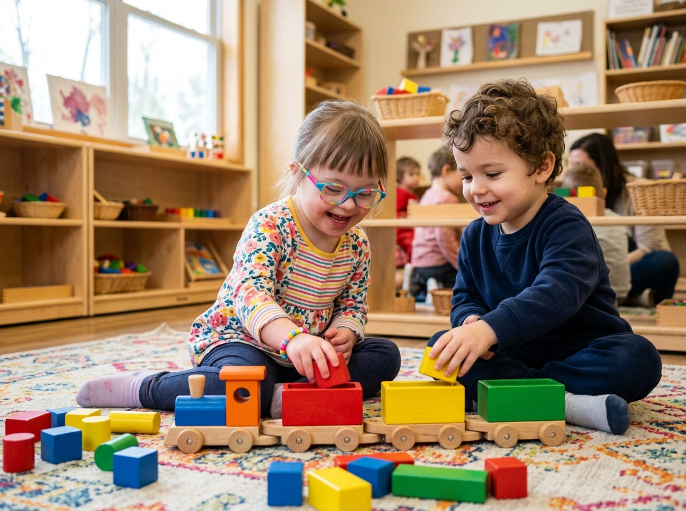
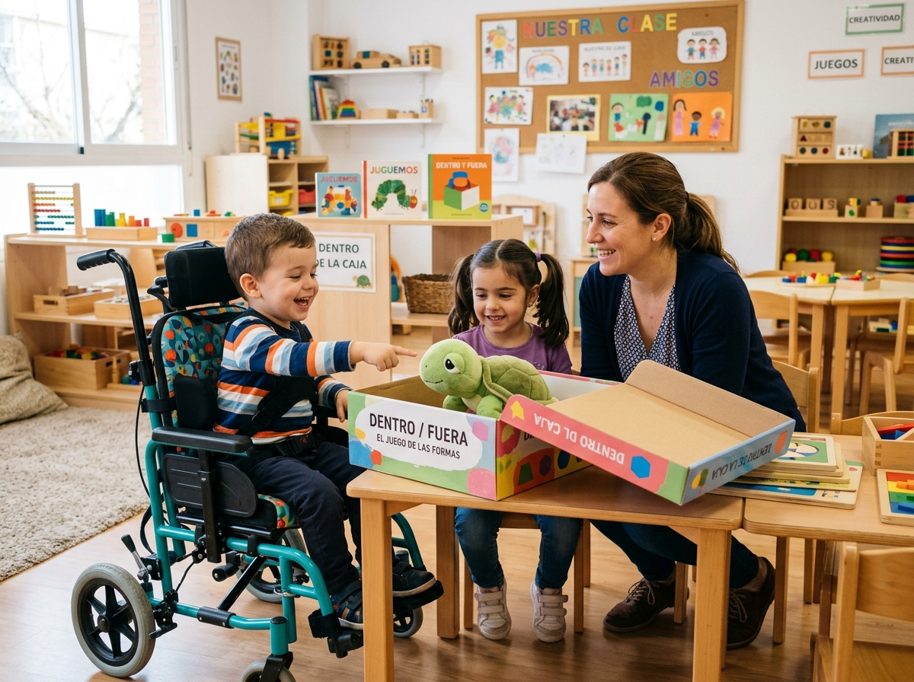
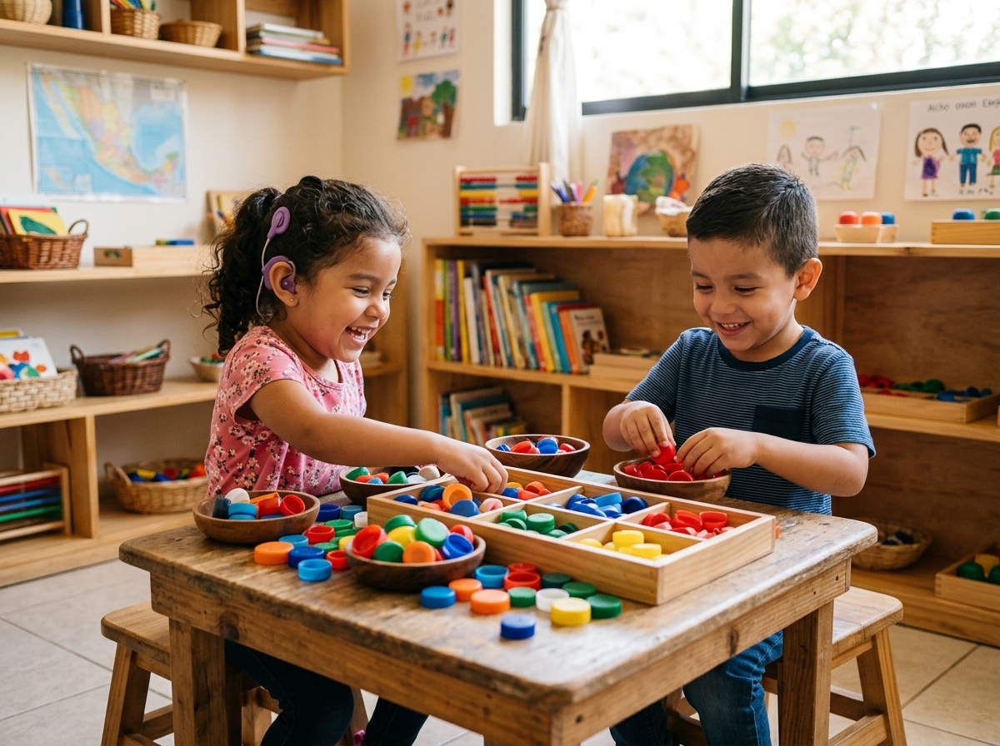
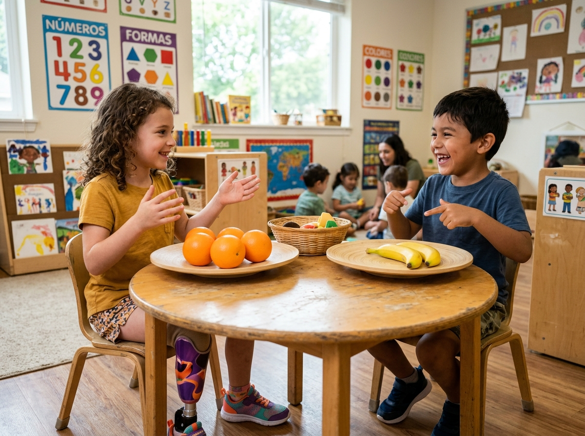
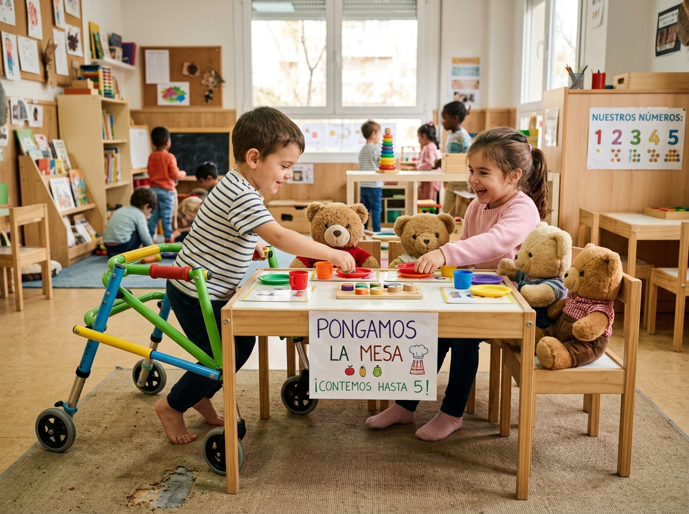

El pensamiento lógico-matemático en Educación Inicial constituye una base para que los niños comprendan relaciones, patrones, cantidades, posiciones y situaciones de la vida cotidiana. En esta etapa, las nociones matemáticas se construyen progresivamente mediante experiencias concretas, significativas y vinculadas con el entorno. El Currículo de Educación Inicial del Ecuador establece el ámbito de Relaciones lógico-matemáticas como un espacio para potenciar nociones básicas y operaciones del pensamiento que permitan establecer relaciones con el medio y resolver problemas sencillos (Ministerio de Educación, 2014).
El juego, la manipulación y la exploración favorecen que los niños aprendan matemática haciendo, observando, comparando, organizando y explicando lo que descubren. Por ello, una actividad lógico-matemática para Educación Inicial debe partir de materiales cercanos y permitir que el niño actúe sobre ellos. El docente acompaña este proceso mediante preguntas, modelado, retroalimentación y oportunidades para comprobar diferentes estrategias.
Desde una perspectiva inclusiva, no basta con ofrecer la misma actividad a todos; es necesario anticipar barreras y proporcionar diferentes formas de acceder a la información, participar y expresar lo aprendido. El Diseño Universal para el Aprendizaje propone precisamente ampliar las posibilidades de participación y expresión, manteniendo metas educativas significativas para todos (CAST, 2024).
Esta guía se relaciona con la Tarea Práctica 5 porque aplica los principios de inclusión, eliminación de barreras, adaptaciones pedagógicas y mediación docente a situaciones concretas de aprendizaje lógico-matemático. Las cinco experiencias propuestas integran recursos accesibles, apoyos visuales, verbales, manipulativos y sensoriales, así como evaluación flexible. De esta manera, se busca que todos los niños participen en una experiencia común, respetando sus ritmos.
La propuesta prioriza clasificación, seriación, correspondencia, comparación de cantidades y ubicación espacial. Estas nociones se trabajan mediante retos breves y lúdicos que estimulan procesos como atención, memoria de trabajo, percepción, lenguaje, control inhibitorio, razonamiento, planificación y resolución de situaciones sencillas.
Las actividades están dirigidas a un grupo de niños de 3 a 5 años, correspondiente al nivel de Educación Inicial. Se considera un aula heterogénea, con niños que presentan diferentes ritmos de aprendizaje, experiencias previas, preferencias de participación y formas de comunicación. Algunos pueden requerir más tiempo, repetición de consignas, apoyos visuales, manipulación de objetos, movimiento o acompañamiento cercano del docente.
El contexto previsto es un aula presencial organizada en pequeños grupos y momentos de trabajo colectivo. Se dispone de materiales reciclados o de bajo costo, como tapas, cajas, bloques, tarjetas, objetos del entorno, recipientes, cuerdas y figuras de cartulina. El espacio se organiza para permitir desplazamiento seguro, acceso a los materiales y diferentes posiciones de trabajo.
La planificación parte de una meta común para todo el grupo. Las adaptaciones modifican principalmente la forma de presentar la consigna, el tiempo disponible, el tamaño o textura de los materiales, la cantidad de apoyos y las formas de respuesta. Así se evita crear actividades paralelas para determinados niños y se favorece la pertenencia al grupo.
| Edad | 3 años. |
| Noción lógico-matemática | Clasificación por color. |
| Objetivo de aprendizaje | Agrupar objetos según su color y señalar o nombrar el grupo formado (Ministerio de Educación, 2014). |
| Materiales | Vagones de cartulina de colores, bloques y tapas grandes, cesta y canción del trencito. |
| Descripción de la experiencia | El aula se convierte en un trencito: cada vagón pide objetos de un color y los niños los cargan mientras cantan «El trencito de los colores». |
| Adaptaciones pedagógicas | Colores muy contrastados; objetos grandes y ligeros; permitir señalar en lugar de nombrar; trabajo en parejas con acompañamiento. |
| Apoyos visuales, verbales, manipulativos o sensoriales | Visuales: vagones modelo. Verbales: canción y consigna corta. Manipulativos: bloques reales. Sensoriales: bloques con texturas. |
| Preguntas mediadoras | ¿Este bloque va en el vagón rojo? ¿Cómo lo sabes? ¿Qué más es rojo? |
| Procesos neurocognitivos estimulados | Atención, percepción visual, memoria de trabajo, lenguaje y control inhibitorio. |
| Indicadores de logro | Reúne objetos del mismo color; señala o nombra el color; completa la carga con apoyo. |
| Evaluación inclusiva | Escala cualitativa (iniciado – en proceso – adquirido); responder señalando o colocando. |

Los niños exploran los bloques y las tapas libremente. Se presenta el trencito y se canta «El trencito de los colores».
Cada vagón muestra su color. Los niños buscan en la cesta objetos de ese color y los cargan, mientras el docente acompaña con preguntas y modelado.
El trencito parte con su carga. Se revisa juntos cada vagón y se celebra con un aplauso el trabajo de todos.
| Edad | 3 años. |
| Noción lógico-matemática | Ubicación espacial: dentro–fuera, arriba–abajo. |
| Objetivo de aprendizaje | Ubicar objetos siguiendo consignas de posición (dentro, fuera, arriba, abajo) durante un juego de escondite (Ministerio de Educación, 2014). |
| Materiales | Cajas grandes, peluche de tortuga, mesa, tela y un aro. |
| Descripción de la experiencia | Tortuguita se esconde en el aula y los niños la buscan siguiendo pistas: «está dentro de la caja», «está arriba de la mesa». |
| Adaptaciones pedagógicas | Consignas con gesto y pictograma; repetir la pista cuantas veces sea necesario; acompañamiento cercano del docente. |
| Apoyos visuales, verbales, manipulativos o sensoriales | Visuales: pictogramas de posición. Verbales: consignas de dos palabras. Manipulativos: cajas y aro reales. Sensoriales: peluche suave para tocar. |
| Preguntas mediadoras | ¿Dónde está Tortuguita? ¿Está dentro o fuera? ¿Arriba o abajo? |
| Procesos neurocognitivos estimulados | Atención, percepción espacial, memoria de trabajo y lenguaje comprensivo. |
| Indicadores de logro | Señala la posición correcta; imita o usa palabras como dentro y arriba; participa activamente del juego. |
| Evaluación inclusiva | Registro anecdótico y observación; responder señalando, mostrando o moviéndose. |

Se presenta a Tortuguita y se juega a esconderla una vez frente a todos: «está dentro de la caja».
Tortuguita se esconde. El docente da pistas de posición y los niños la buscan por grupos, repasando dentro–fuera y arriba–abajo.
Tortuguita encuentra su casita. Los niños repiten las posiciones con gestos y se despiden de su amiga.
| Edad | 4 años. |
| Noción lógico-matemática | Clasificación por color, forma, tamaño y textura. |
| Objetivo de aprendizaje | Clasificar objetos según una característica observable y explicar, con palabras, gestos o señalamientos, el criterio utilizado (Ministerio de Educación, 2014). |
| Materiales | Tapas de botellas, bloques, botones grandes, figuras de cartulina, recipientes y tarjetas con colores o formas. |
| Descripción de la experiencia | Los niños exploran una colección de objetos del aula y descubren distintas maneras de organizarlos. El reto es identificar una característica y utilizarla para formar grupos. |
| Adaptaciones pedagógicas | Objetos grandes y fáciles de agarrar; recipientes abiertos; tarjeta modelo del criterio; menos distractores visuales sin reducir la meta; permitir señalar, verbalizar o demostrar. |
| Apoyos visuales, verbales, manipulativos o sensoriales | Visuales: tarjeta modelo. Verbales: consignas cortas y canción. Manipulativos: objetos reales. Sensoriales: reconocer por textura. |
| Preguntas mediadoras | ¿Cuáles van juntos? ¿Cómo lo sabes? ¿Qué pasa si cambiamos el criterio? |
| Procesos neurocognitivos estimulados | Atención, memoria de trabajo, control inhibitorio, percepción, lenguaje y razonamiento. |
| Indicadores de logro | Agrupa por un atributo; mantiene el criterio; lo explica con palabras, gestos o señas. |
| Evaluación inclusiva | Escala cualitativa (iniciado – en proceso – adquirido) y registro anecdótico; responder señalando, colocando o diciendo. |

Los niños exploran libremente las tapas: las tocan, apilan y comparan. Se canta «Vamos al mercadito» y se presenta la consigna apoyada en un pictograma.
El docente modela una clasificación sencilla. Cada equipo elige un criterio y organiza las tapas en las cajas: primero por color y luego por tamaño. Después se cambia el criterio y se vuelve a clasificar.
Cada niño atiende el mercadito y entrega una tapa a cada cliente: una para uno. Se cuenta cuántas tapas se entregaron y se celebra el trabajo en equipo.
| Edad | 4 años. |
| Noción lógico-matemática | Comparación de cantidades: más, menos, igual. |
| Objetivo de aprendizaje | Comparar colecciones pequeñas y expresar con palabras, gestos o señas si hay más, menos o la misma cantidad (Ministerio de Educación, 2014). |
| Materiales | Frutas de juguete o recortes, dos platos grandes, cesta y tarjetas con puntos. |
| Descripción de la experiencia | Dos equipos preparan el festín: cada plato recibe frutas de la cesta y luego se compara cuál tiene más, cuál menos o si quedaron iguales. |
| Adaptaciones pedagógicas | Cantidades de 1 a 4; comparar emparejando una a una; permitir responder señalando el plato correcto. |
| Apoyos visuales, verbales, manipulativos o sensoriales | Visuales: tarjetas con puntos. Verbales: preguntas cerradas. Manipulativos: frutas y platos reales. Sensoriales: contar tocando cada fruta. |
| Preguntas mediadoras | ¿En qué plato hay más? ¿Cómo lo comprobamos? ¿Qué falta para que queden iguales? |
| Procesos neurocognitivos estimulados | Atención, conteo, correspondencia, razonamiento y control inhibitorio. |
| Indicadores de logro | Compara dos colecciones pequeñas; empareja una a una; usa «más», «menos» o «igual» con apoyo. |
| Evaluación inclusiva | Registro anecdótico; responder señalando, colocando o diciendo. |

Se presenta la cesta de frutas y se juega libremente a «sirve tu plato» con las frutas del aula.
Cada equipo llena su plato. Frente a todos se comparan los platos emparejando frutas una a una y decidiendo: más, menos o iguales.
Se reparte el festín entre todos. Se repasa cuántas frutas tenía cada plato y se celebra la merienda compartida.
| Edad | 5 años. |
| Noción lógico-matemática | Correspondencia uno a uno y conteo hasta 5. |
| Objetivo de aprendizaje | Repartir un objeto a cada personaje sin repetir ni omitir y contar señalando hasta 5 cuántos hay (Ministerio de Educación, 2014). |
| Materiales | Osos o muñecos, platos, vasos y servilletas de cartulina, tarjetas con puntos y numerales. |
| Descripción de la experiencia | Los osos llegan a la merienda: cada uno recibe su plato, su vaso y su servilleta. Al final se cuenta cuántos invitados hay y cuántos objetos se usaron. |
| Adaptaciones pedagógicas | Tarjeta modelo de la mesa servida; conteo conjunto con el docente; tiempo amplio y sin prisa. |
| Apoyos visuales, verbales, manipulativos o sensoriales | Visuales: tarjeta modelo y numerales. Verbales: canción de los números. Manipulativos: vajilla real. Sensoriales: contar tocando cada objeto. |
| Preguntas mediadoras | ¿Le falta algo a algún oso? ¿Cuántos platos pusimos? ¿Qué pasa si llega un oso más? |
| Procesos neurocognitivos estimulados | Atención, memoria de trabajo, conteo, correspondencia y planificación. |
| Indicadores de logro | Reparte un objeto a cada uno sin repetir ni omitir; cuenta señalando hasta 5; responde «cuántos hay». |
| Evaluación inclusiva | Escala cualitativa y registro anecdótico; responder señalando, colocando o diciendo. |

Suena la canción de los números y llegan los osos invitados. Se observa la tarjeta modelo de la mesa servida.
Por turnos, cada niño pone un plato, un vaso y una servilleta: uno para cada oso. Se repasa que ningún oso quede sin lo suyo.
Se cuenta señalando: un plato por oso, hasta cinco. Se brinda con jugo imaginario y los osos agradecen la merienda.
Las adaptaciones propuestas permiten que todos los niños participen en las mismas experiencias porque modifican las condiciones de acceso y expresión, pero mantienen la intención pedagógica. Se incorporan materiales de distintos tamaños y texturas, apoyos visuales, consignas breves, modelado, repetición, tiempo flexible y diferentes formas de respuesta. También se organiza el espacio para facilitar el movimiento y la manipulación (DUA). Esta perspectiva ofrece múltiples formas de participación, representación y acción/expresión (CAST, 2024).
Porque ofrecen diferentes formas de acceder, participar y demostrar el aprendizaje. Los niños pueden observar, tocar, mover, señalar, hablar o actuar, de acuerdo con sus posibilidades, mientras todos trabajan metas matemáticas comunes.
Permitió comprender que una actividad inclusiva debe anticipar barreras desde la planificación, que adaptar no significa simplificar el aprendizaje, sino ofrecer apoyos que permitan que cada niño alcance la misma intención pedagógica mediante diferentes caminos.
Porque organiza experiencias concretas, progresivas y flexibles que permiten aprender desde la acción. Al considerar diferentes formas de participación, aumenta las oportunidades de explorar relaciones, cantidades, secuencias y posiciones, fortaleciendo el razonamiento y la autonomía.
Pueden mejorar la práctica docente al convertir la inclusión en acciones observables: seleccionar materiales accesibles, formular preguntas mediadoras, observar procesos, ajustar apoyos y evaluar de manera flexible. Esto favorece una enseñanza más participativa, intencional y respetuosa de la diversidad.